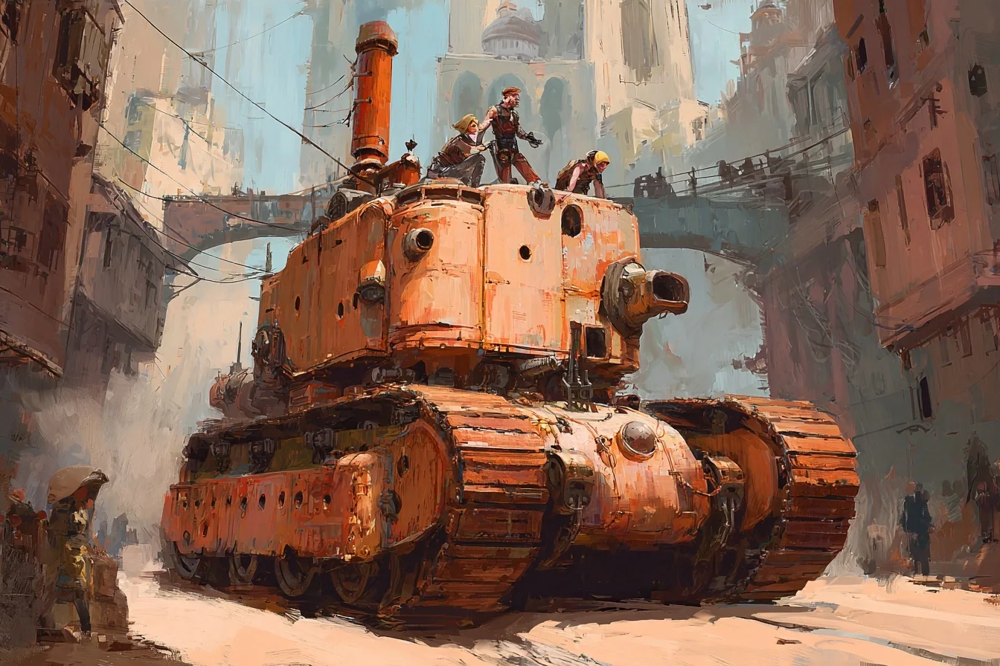
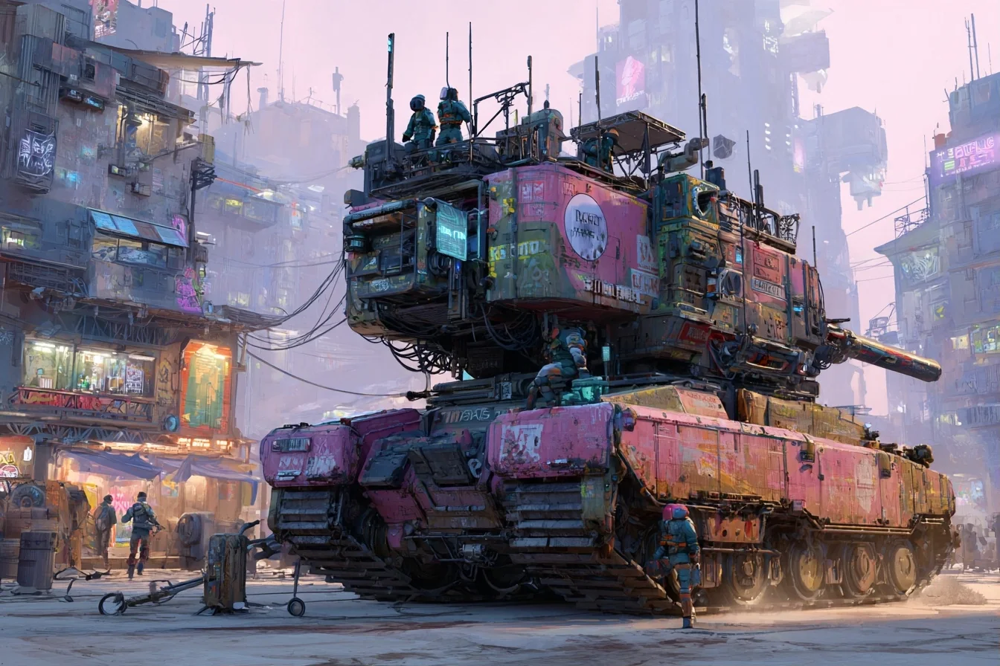
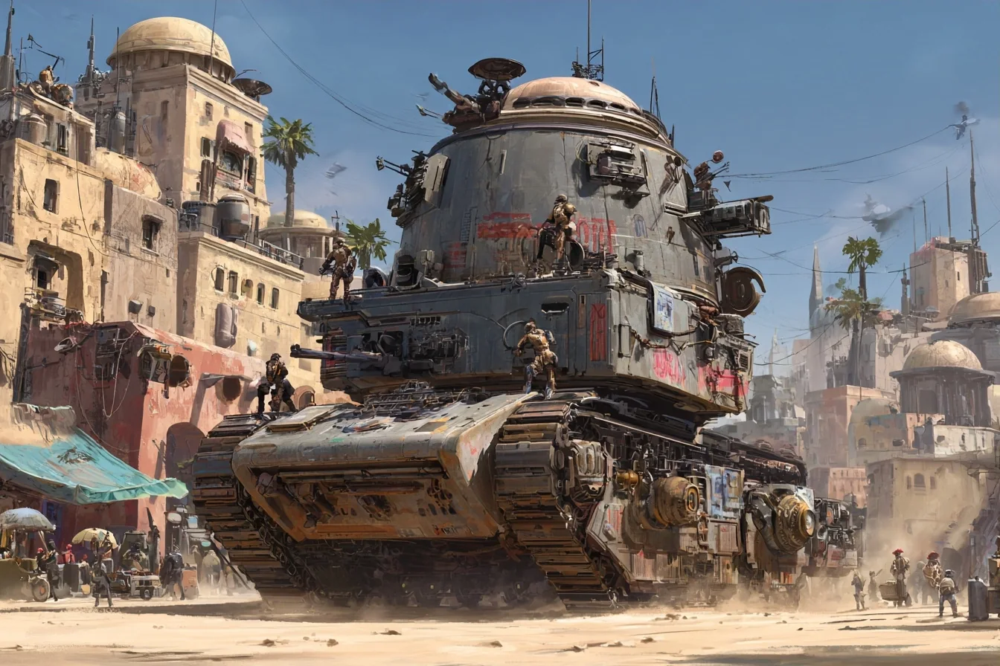
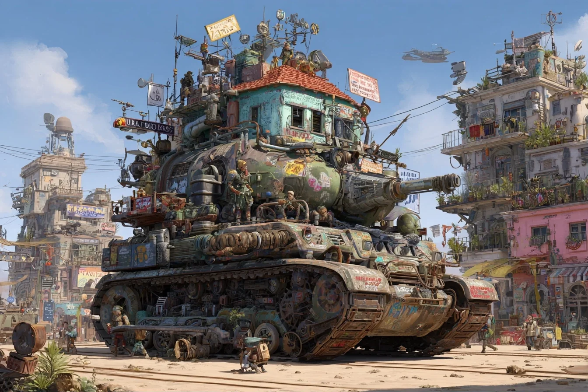

BOILERHEART II
Your crew lives inside a war-tank raised on poetry and opera. And it's never going to let you forget it.
From five-minute expo games to a world we'd play at home.
Fun after six months of development. Still growing after three years. Much more ambitious than anything we've made, and that's the point.
…and adds the world around it.
After the uprising, AI could learn anything except technical material. So engines need human crews, and every one is a drama queen.
Four generations of machine-made viruses. Everyone fears outsiders. Probably immune for two generations now. Nobody's checked.
War-made people of every shape. A cartoony cast with no "default human."

Debates for 3 hours, then votes.

Everything's shared. Even the playlist.

Holy scripture: Lord of the Rings 1&2.

Whole towns on tracks.
Love a style? Build its faction. The map grows with the team.
A brass opera mask that sighs steam when it sulks.
A crystal cortex flickering neon with its moods.
An illuminated face that speaks only in Scroll quotes.
A tree through the hull. Wilting = low Sanity.
Same soul, different body. Whoever owns a faction designs its engine.
Fortress, workshop, guild vault and home. It just happens to drive. Built from modules every faction reskins:
Three weeks, one town. Next time a dungeon. It all stays in the world.
Build a corner, go home, find it in the next Steam update.
One faction, one town, one tank is already a game.
Five on a back-to-back bench, each worth up to ±20%. The queue becomes a loading dock where the next crew learns their stations.
Let's build a world, not just a game.
Five arcade games shipped. Time to be ambitious.